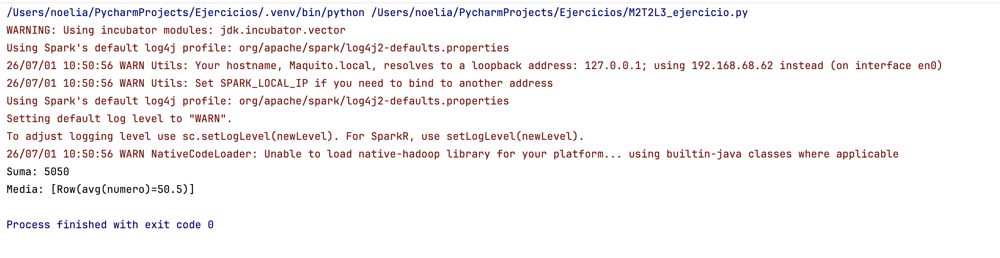

Creación de sesiones: SparkSession y SparkContext
DESCRIPCIÓN
La creación de una sesión constituye el punto de partida de cualquier aplicación desarrollada en Apache Spark. A través de dicha sesión, el programa establece comunicación con el clúster, coordina la ejecución distribuida y gestiona los recursos computacionales necesarios.
En las primeras versiones de Spark, el objeto principal de acceso era SparkContext, centrado en el procesamiento basado en RDD. Sin embargo, a partir de Spark 2.0 se introduce SparkSession, que unifica el acceso a las APIs del ecosistema (Core, SQL, Streaming y MLlib), simplificando el desarrollo y estandarizando el modelo de ejecución.
CONTENIDOS
Arquitectura general de una aplicación Spark
Como se ha comentado en anteriores lecciónes, una aplicación Spark se compone, de forma general, de los siguientes elementos:
- Driver Program: proceso principal que ejecuta el código del usuario.
- Cluster Manager: gestiona los recursos del clúster (por ejemplo: Standalone, YARN, Kubernetes).
- Executors: procesos distribuidos que ejecutan tareas sobre particiones de datos.
- Tasks: unidades mínimas de trabajo que se asignan a los executors.
- Planificación: componentes internos (DAG Scheduler / Task Scheduler) que organizan la ejecución.
En este contexto, la “sesión” es el mecanismo mediante el cual el Driver se conecta al clúster y coordina la ejecución distribuida.
SparkContext
SparkContext es el punto de entrada original de Spark Core. Representa la conexión activa entre el programa del usuario y el clúster, y es responsable de inicializar la aplicación, establecer la comunicación con el cluster manager y coordinar la ejecución distribuida.
Entre sus responsabilidades destacan:
- Inicialización de la aplicación y registro en el cluster manager.
- Creación y gestión de RDDs.
- Planificación de jobs, stages y tasks (DAG y scheduler).
- Gestión de memoria distribuida y componentes internos de ejecución.
from pyspark import SparkContext
from pyspark import SparkConf
conf = SparkConf() \
.setAppName("AplicacionTFG") \
.setMaster("local[*]")
sc = SparkContext(conf=conf)
Parámetros principales:
setAppName(): nombre lógico de la aplicación.setMaster(): modo de ejecución. Ejemplos:local[*]: ejecución local utilizando todos los núcleos.spark://host:7077: modo Standalone.yarn: clúster Hadoop YARN.
Nota: solo puede existir un SparkContext activo por JVM. Intentar crear varios suele producir errores del tipo:
ValueError: Cannot run multiple SparkContexts at onceSparkSession
SparkSession es el punto de entrada unificado introducido en Spark 2.0. Integra en un único objeto el acceso a:
- Spark Core (incluyendo SparkContext)
- DataFrames y Spark SQL
- Structured Streaming
- MLlib (APIs de machine learning)
Por este motivo, SparkSession es el modelo recomendado en desarrollos modernos y es el modelo que seguiremos a lo largo de este curso.
Creación de una SparkSession
from pyspark.sql import SparkSession
spark = SparkSession.builder \
.appName("AplicacionUNED") \
.master("local[*]") \
.getOrCreate()
El método getOrCreate() reutiliza una sesión existente si ya fue creada o crea una nueva si no existe.
El SparkContext interno queda accesible así:
sc = spark.sparkContext| Área | Ejemplo de acceso |
|---|---|
| RDD | spark.sparkContext.parallelize(...) |
| DataFrame | spark.read.csv(...) |
| SQL | spark.sql("SELECT ...") |
| Structured Streaming | spark.readStream(...) |
| MLlib | spark.ml |
Comparativa técnica: SparkContext vs SparkSession
| Característica | SparkContext | SparkSession |
|---|---|---|
| Introducción | Spark 1.x | Spark 2.0 |
| API unificada | No | Sí |
| Soporte SQL | Limitado / externo | Completo |
| Soporte DataFrame | No directo | Sí |
| Recomendado actualmente | No (uso legacy) | Sí |
| Nivel de abstracción | Bajo | Alto |
En la práctica, incluso cuando se trabaja con RDDs, se recomienda inicializar la aplicación mediante SparkSession y
acceder a SparkContext a través de spark.sparkContext.
Ciclo de vida de una sesión Spark
- Creación de la SparkSession.
- Configuración de parámetros (memoria, cores, particiones, etc.).
- Definición de transformaciones (evaluación perezosa).
- Construcción del DAG (plan lógico y/o físico, según API utilizada).
- Ejecución de una acción (por ejemplo:
count,collect,write). - Planificación de stages y tasks.
- Ejecución distribuida en executors y obtención de resultados.
- Finalización y liberación de recursos.
Cierre explícito de la sesión:
spark.stop()Configuración avanzada de sesiones
En entornos de clúster (por ejemplo, modo Standalone en Docker), es habitual configurar recursos y parámetros de ejecución desde el builder de SparkSession:
spark = SparkSession.builder \
.appName("Spark-Cluster") \
.master("spark://spark-master:7077") \
.config("spark.executor.memory", "2g") \
.config("spark.executor.cores", "2") \
.config("spark.driver.memory", "1g") \
.getOrCreate()
Parámetros frecuentes:
spark.executor.memory: memoria por executor.spark.executor.cores: núcleos por executor.spark.driver.memory: memoria del driver.spark.sql.shuffle.partitions: número de particiones para operaciones de shuffle (impacto en rendimiento).
Buenas prácticas en el desarrollo de aplicaciones Spark
- Utilizar siempre SparkSession como punto de entrada.
- Definir un
appNamedescriptivo. - Configurar explícitamente el
mastersegún el modo (local, Standalone, etc.). - Ajustar memoria y cores acorde a los recursos disponibles.
- Cerrar la sesión con
spark.stop()al finalizar. - Evitar crear múltiples sesiones innecesarias.
DIFERENCIAS DE COMPORTAMIENTO: STANDALONE vs KUBERNETES
Apache Spark puede ejecutarse sobre distintos cluster managers. Dos opciones habituales son el modo Standalone (nativo de Spark) y la ejecución sobre Kubernetes. Aunque la creación de la sesión con SparkSession es similar, el comportamiento interno, la asignación de recursos y el modelo operativo presentan diferencias relevantes.
Arquitectura en modo Standalone
En modo Standalone:
- Existe un Spark Master propio de Spark.
- Los Workers ejecutan los procesos Executor.
- El Driver se conecta al Master para registrar la aplicación y solicitar recursos.
- La asignación de recursos es gestionada por Spark (Master/Workers).
Flujo de creación de sesión en Standalone
spark = SparkSession.builder \
.master("spark://spark-master:7077") \
.getOrCreate()
Proceso típico:
- El Driver se conecta al Spark Master.
- Se registra la aplicación.
- El Master asigna executors en los Workers disponibles.
- Se reservan CPU/memoria y comienza la ejecución distribuida.
Características habituales:
- Arquitectura simple y menor sobrecarga.
- Adecuado para entornos académicos y laboratorios (p. ej., Docker).
- Escalabilidad y elasticidad más limitadas que Kubernetes.
Arquitectura en modo Kubernetes
En modo Kubernetes:
- El cluster manager es Kubernetes (API Server + Scheduler).
- Driver y Executors se ejecutan como Pods.
- Kubernetes decide el scheduling en nodos y aplica políticas de aislamiento y recursos.
- La gestión de ciclo de vida (reinicios, reprogramación) se beneficia del modelo cloud-native.
Flujo de creación de sesión en Kubernetes
spark = SparkSession.builder \
.master("k8s://https://kubernetes.default.svc") \
.config("spark.kubernetes.container.image", "apache/spark:latest") \
.getOrCreate()
Proceso típico:
- El Driver se despliega como Pod (según modo de despliegue seleccionado).
- El Driver se comunica con la API de Kubernetes para solicitar executors.
- Los executors se crean como Pods.
- Kubernetes programa Pods en nodos según disponibilidad y políticas.
Comparativa
| Aspecto | Standalone | Kubernetes |
|---|---|---|
| Cluster Manager | Spark Master | API Server + Scheduler |
| Driver | Proceso (JVM/Python) en un nodo | Pod |
| Executors | Procesos en Workers | Pods |
| Gestión de recursos | Spark | Kubernetes (requests/limits) |
| Escalabilidad | Más manual | Más elástica (cloud-native) |
| Aislamiento | Más limitado | Namespaces, Pods, políticas |
| Complejidad operativa | Menor | Mayor |
La reserva de recursos se negocia con el Spark Master. Configuraciones típicas:
.config("spark.executor.instances", "4")
.config("spark.executor.memory", "4g")
Si no hay recursos disponibles, la aplicación puede quedarse a la espera hasta que el clúster libere capacidad.
KubernetesLa asignación depende de la capacidad del clúster y de los resource requests/limits asociados a Pods:
.config("spark.executor.memory", "4g")
.config("spark.kubernetes.executor.request.cores", "2")
Kubernetes decide en qué nodo ejecutar cada Pod y puede rechazar el scheduling si no hay capacidad suficiente.
Diferencias en escalabilidad y resiliencia- Standalone: escalado más manual (añadir workers, ajustar instancias). Resiliencia dependiente del entorno.
- Kubernetes: mejor integración con estrategias cloud-native (reintentos, reprogramación, autoescalado según políticas e infraestructura).
En una aplicación con despliegue típico en Docker/Standalone, el modo Standalone suele ser el más adecuado por su simplicidad y facilidad de explicación. Kubernetes es especialmente relevante cuando el enfoque se orienta a: despliegues cloud-native, multi-tenant, elasticidad y operación a gran escala.
Desde el punto de vista del desarrollador, SparkSession actúa como interfaz estable; sin embargo, el backend de orquestación (Standalone vs Kubernetes) cambia el modo en que se aprovisionan recursos, se gestionan procesos (executors) y se aplica resiliencia. En síntesis: Standalone prioriza simplicidad y control; Kubernetes prioriza elasticidad e integración cloud-native.
CONCLUSIONES
La creación de sesiones en Apache Spark representa el punto de entrada al procesamiento distribuido. Mientras que SparkContext constituye la base del motor de ejecución, SparkSession introduce una capa de abstracción superior que unifica las capacidades del ecosistema (SQL, DataFrames, Streaming y ML).
En desarrollos modernos, SparkSession se considera el estándar debido a la simplificación del modelo de desarrollo, la integración total de APIs y la alineación con la evolución del framework. Comprender la relación entre SparkSession y SparkContext facilita la construcción de aplicaciones más eficientes, escalables y mantenibles.
CASO PRÁCTICO APLICADO
Objetivo
Vamos a construir una aplicación que:
- Inicialice una SparkSession.
- Genere un RDD con números del 1 al 100.
- Calcule la suma usando
reduce. - Cree un DataFrame con los mismos datos.
- Calcule la media usando funciones de agregación.
- Finalice correctamente la sesión.
La salida esperada si lo ejecutamos en pycharm será:
